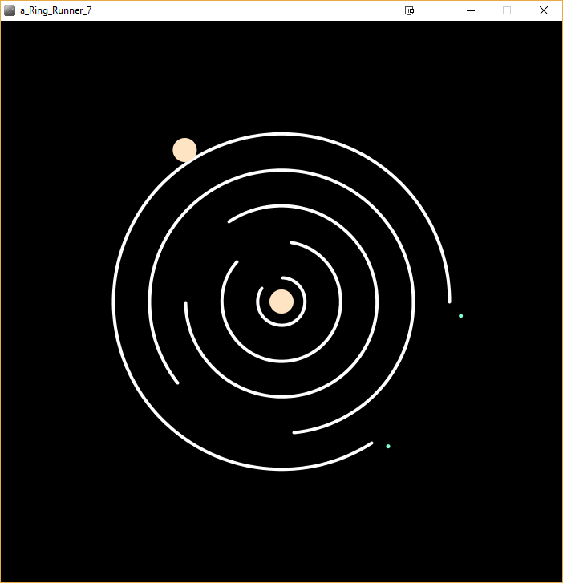
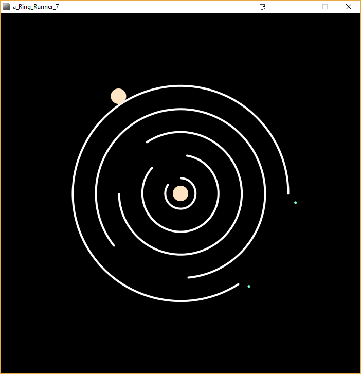

The following are projects that I have been involved in. The list is ordered with the most recent project
at the top. By ordering the projects chronologically, the progress I've made can be seen. Most of the
projects have been a part of school but this website is a personal endeavor. My GitHub can be found
here.
This website, the one you're reading this on, is a personal project of mine that I
made over my summer break. I wanted to make a website for multiple reasons. The first reason was
to learn a new programming language (HTML and CSS in this case) and apply it immediately.
Second was because I am going to be applying for internships soon and having a website
is useful in showcasing my past projects and info about me. Lastly was because I love
programming and find it fun!
This is the first time I've programmed in HTML and it's very
different from the Java and C programming that I'd previously done. HTML is very similar
to LaTeX, a language used for note taking, so I learned it quickly. I also owe my knowledge to
the textbook HTML and CSS: Design and Build Websites by Jon Duckett. I read this
textbook to learn HTML and it made it really easy for me to understand the concepts.
This website is currently hosted using Github Pages. The header
font is Open Sans and the text font is Roboto which are provided by Google Fonts.
While this project was part of my database class, it can be thought of as
a continuation and combination of my last two projects. This project was
done in a group of three and I was assigned to do the UI aspect of the app. For this project,
my group had to create an app that connected to a database (mySQL) and retrieve
data from the database using SQL queries. This project was challenging because the project
required the use of multiple programming languages (Java, SQL, PHP, and XML) and required the
use of an external server to host the data.
The purpose of this project was to allow library users access to the library database from the
app. Their are two different users, users and admins, with admins having additional
functionalities. Their were a lot of functions that we had to incorporate such as
search, add, delete, and update which increased the complexity of the project.
Overall, this project was very challenging but I learned a lot from it.
This was my first project that involved the use of a database. This project was
done in a group of three where I had the role of designing the UI for
the program. The UI was built using Java and IntelliJ. The purpose of this
program was to connect to an external database (mySQL in this case) and relay
information back and forth from the client and server.
There are two different types of users, clients and admins, both of which have different
functionalities. The program allows users to book a flight and view the current flights
to and from there destination. Only admins are able to add and view all tickets.
A generic calculator app for Android. This was my first experience working
with Android Studio and Java. There were many small quirks that we had to
incorporate such as division by zero, holding the previous operation, and
chaining operations.
My first major project after taking my first programming course in first year
engineering. The project I chose to do was an original game programmed in
Processing; a language based on Java. A notable problem that I had to
solve when developing the game was trying to make the ball move in a
circular path. The solution was to use sin and cos for the y and x coordinates
of the ball. This solution made sense as the unit circle is described by trigonometric
functions.
 
